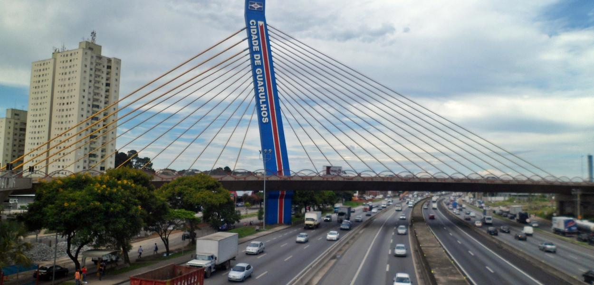
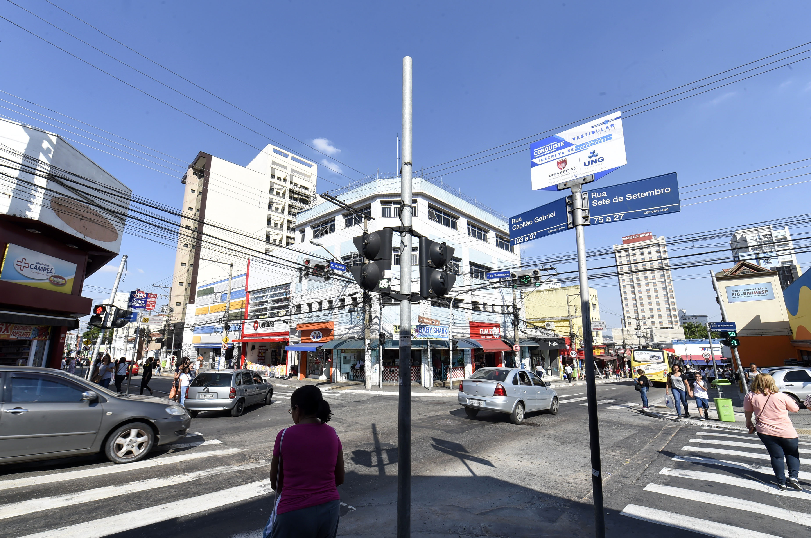
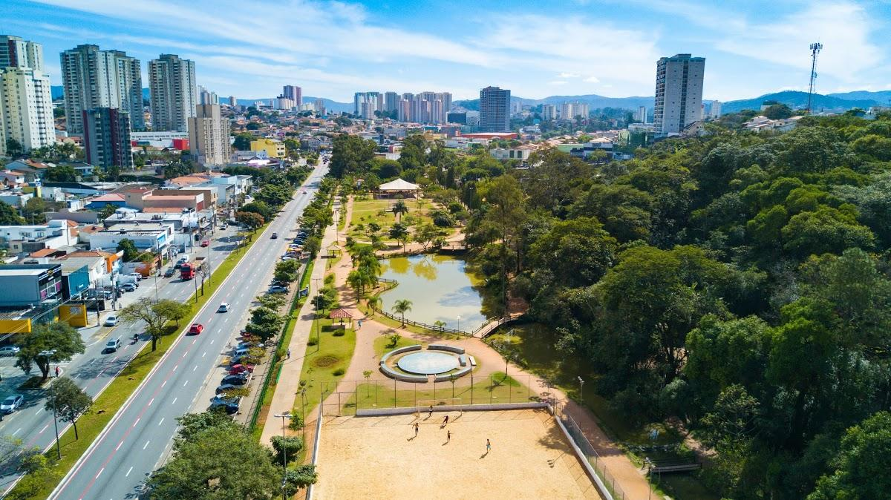

Guarulhos é um município da Região Metropolitana de São Paulo, no estado de São Paulo, no Brasil. É a segunda cidade mais populosa do estado, foi fundada em 8 de dezembro de 1560, pelo padre jesuíta Manuel de Paiva.Existem atualmente em Guarulhos vários polos de fauna e flora, dentre os quais merecem maior destaque: Parque Estadual Cantareira (Núcleo Cabuçu), também conhecido por Reserva Estadual da Cantareira.
O Zoológico de Guarulhos, criado em 1981, mantém cerca de 500 animais, de 100 diferentes espécies, priorizando a fauna nacional, com 91% de espécies nativas. O Zoo participa de programas de conservação de espécies ameaçadas, realiza pesquisas científicas e atividades de educação para conservação. Os animais recebem cuidados constantes, tanto preventivos como curativos, por uma equipe de biólogos, veterinários e tratadores, incumbidos da manutenção de sua saúde e bem estar.
Lago da Vila Galvão ou popularmente conhecido como Lago dos Patos, um dos mais tradicionais pontos de lazer da cidade. O lago oferece pedalinhos, parque infantil, mesas e bancos, além de um centro de exposição de arte, aparelhos de ginástica, pista para corrida e caminhada posto da Guarda Civil Municipal. O local conta ainda com quiosques de lanches e feira de artesanato.
Inaugurado em 1982 e com mais de 14 milhões de m2, está localizado na Zona Leste de São Paulo. Além de preservar fauna e flora da várzea do rio Tietê, o parque proporciona uma série de atividades culturais, educacionais, recreativas, esportivas e de lazer, recebendo mais de 330 mil visitantes todo mês. Principais atrações: Centro de Educação Ambiental, Centro Cultural, Museu do Tietê, biblioteca e Centro de Recepção de Animais Silvestres, que abriga 2 mil animais apreendidos ou doados.
| Nome do prefeito | Ano eleito | Partido | |
|---|---|---|---|
| Gustavo Henric Costa,Guti | 1º de janeiro de 2021 | PSD | Atual |
| Gustavo Henric Costa,Guti | 1º de janeiro de 2017 | PSB/PSD | |
| Sebastião Almeida | 1º de janeiro de 2013 | PT | |
| Sebastião Almeida | 1º de janeiro de 2009 | PT |
| Dados tecnicos baseados em 6 pontos , sendo eles Populaçao, trabalho e rendimento, educação, economia, saúde, território e ambiente | ||
|---|---|---|
| POPULAÇÃO | População estimada [2021] | 1.404.694 pessoas |
| TRABALHO E RENDIMENTO | Salário médio mensal dos trabalhadores formais | 3,1 salários mínimos |
| EDUCAÇÃO | Matrículas no ensino fundamental | 183.716matrículas |
| ECONOMIA | PIB per capita | R$ 47.249,21 |
| SAÚDE | Mortalidade Infantil | 12,45 óbitos por mil nascidos vivos |
| TERRITÓRIO E AMBIENTE | Área da unidade territorial | 318,675km² |
Todos os dados usados na tabela sao fornecidos pelo IBGE : Site do IBGE